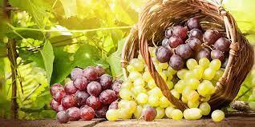

QUEM SOMOS
A história da nossa vinícola está diretamente conectada com a de quatro primos, jovens empreendedores, que juntos decidiram que iriam trabalhar no mundo do vinho, retomando o sonho dos avós, agricultores e descendentes de imigrantes italianos.
Somos uma equipe apaixonada pela produção de vinhos finos de qualidade, utilizando as melhores uvas e técnicas de vinificação para criar bebidas excepcionais.
Nosso compromisso com a qualidade começa no vinhedo, onde nossas uvas são cultivadas com cuidado e atenção aos detalhes. Selecionamos as melhores variedades para cada tipo de vinho e trabalhamos em estreita colaboração com nossos agricultores para garantir que as uvas sejam colhidas no momento certo e em condições ideais.
Agradecemos por escolher nossos vinhos e esperamos que você desfrute da experiência que eles oferecem. Saúde!